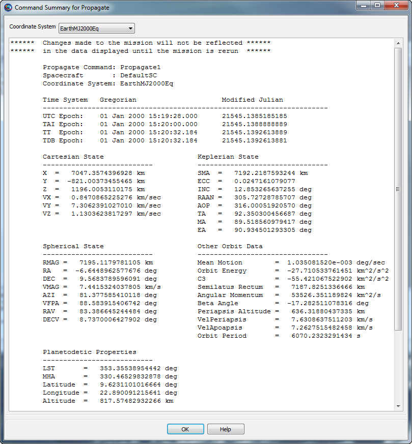

The Command Summary is a summary of orbit and spacecraft state information after execution of a command. For example, if the command is a Propagate command, the Command Summary contains state data after propagation is performed.
To view the Command Summary, right-click on the desired command, and select Command Summary. Or alternatively, double-click on the desired command, and click the Command Summary icon located near the lower left corner of the panel. You must run the mission before viewing Command Summary data.
Snapshot of a sample Command Summary is shown in the following figure.
|  |
To view a Command Summary, you must first run the mission. If the mission has not been run during the current session, the Command Summary will be empty. If changes are made to your configuration, you must rerun the mission for those changes to take effect in the Command Summary.
The Command Summary contains several types of data. Orbit state representations include Cartesian, spherical, and Keplerian. For hyperbolic orbits, B-Plane coordinates, DLA and RLA are provided. Planetodetic information includes Longitude and Latitude among others. For a Maneuver command, the Maneuver properties are displayed in the CoordinateSystem specified on the ImpulsiveBurn resource. See the Coordinate Systems subsection below for more information on the command summary contents when some data is undefined.
In the event when the orbit is nearly singular conic section and/or any of the keplerian elements are undefined, an abbreviated Command Summary is displayed as shown in the Coordinate Systems subsection below.
For performance reasons, propagation in step mode does not write out a command summary. Additionally, if a command is nested in control logic and that command does not execute as a result, no command summary data is available.
The Coordinate System menu at the top of the Command Summary dialog allows you to select the desired coordinate system for the state data. When the Coordinate System has a celestial body at the origin, the Command Summary shows all supported data including Cartesian, Spherical, Keplerian, Other OrbitData, and Planetodetic properties as shown in the GUI screenshot above. When the Coordinate System does not have a celestial body at the origin, the CommandSummary contains an abbreviated command summary as shown below.
Note: GMAT currently requires that the selected CoordinateSystem cannot reference a spacecraft.
Propagate Command: Propagate1
Spacecraft : DefaultSC
Coordinate System: EarthMJ2000Eq
Time System Gregorian Modified Julian
--------------------------------------------------------------------
UTC Epoch: 01 Jan 2000 15:19:28.000 21545.1385185185
TAI Epoch: 01 Jan 2000 15:20:00.000 21545.1388888889
TT Epoch: 01 Jan 2000 15:20:32.184 21545.1392613889
TDB Epoch: 01 Jan 2000 15:20:32.184 21545.1392613881
Cartesian State Spherical State
--------------------------- ------------------------------
X = 7047.3574396928 km RMAG = 7195.1179781105 km
Y = -821.00373455465 km RA = -6.6448962577676 deg
Z = 1196.0053110175 km DEC = 9.5683789596091 deg
VX = 0.8470865225276 km/sec VMAG = 7.4415324037805 km/s
VY = 7.3062391027010 km/sec AZI = 81.377585410118 deg
VZ = 1.1303623817297 km/sec VFPA = 88.583915406742 deg
RAV = 83.386645244484 deg
DECV = 8.7370006427902 deg
Spacecraft Properties
------------------------------
Cd = 2.200000
Drag area = 15.00000 m^2
Cr = 1.800000
Reflective (SRP) area = 1.000000 m^2
Dry mass = 850.00000000000 kg
Total mass = 850.00000000000 kg